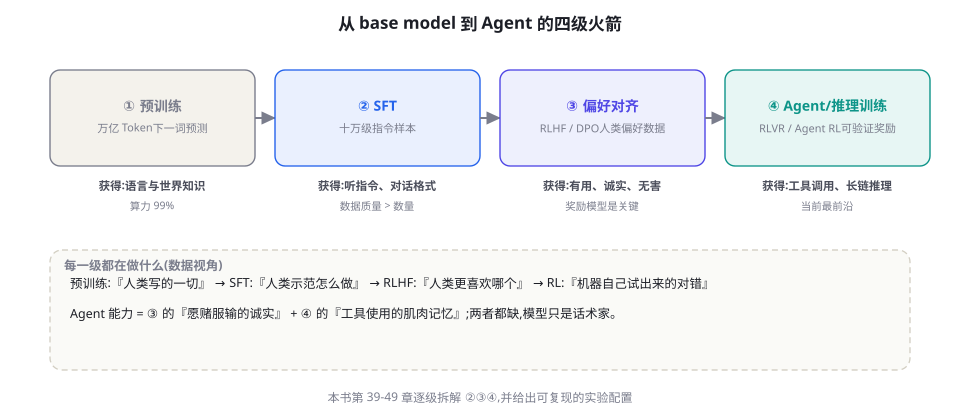

训练全景图：预训练 → SFT → RLHF → Agent 训练
前三部分你把 Agent 当「系统」来建；第四部分打开引擎盖，回答「模型为什么能做到这些、怎样才能更强」。本章先立全景：从预训练到 Agent 强化训练的四级火箭——每一级在做什么、数据从哪来、Agent 能力在哪一级诞生。
四级火箭：每一级都在做什么

第一级：预训练（Pre-training）。任务定义极简——给定前文预测下一个 token；数据是万亿级 token 的互联网文本与代码；算力占总成本的 99%。它赋予模型语言能力与世界知识，但此时模型只会「续写」，不会「对话」更不会「听话」。对 Agent 的贡献是底座：工具调用格式的理解（代码语料的功劳）、常识推理、长文理解。第二级：监督微调（SFT）。用十万到百万级「指令 → 优质回答」的示范对，把续写机器调教成对话助手。贡献：指令遵循、对话格式、「像助手一样说话」的风格。第三级：偏好对齐（RLHF/DPO）。用人类对回答的偏好排序训练，让模型从「模仿示范」升级为「理解什么是更好的」——有用、诚实、无害三大品质在此级成型（第 40-42 章）。第四级：Agent/推理训练（RLVR/Agent RL）。本章的主角：用「可验证的结果」与「环境反馈」做强化学习，把工具使用、长链推理、任务执行能力训练进权重（第 43-45 章）。o1、R1、以及各大厂的 Agent 模型都诞生于这一级。
| 阶段 | 学习信号 | 数据规模 | 核心产出 | 与 Agent 的关系 |
|---|---|---|---|---|
| 预训练 | 下一 token 预测（自监督） | 万亿 token | 语言与知识底座 | 地基：代码语料教会「调用格式」 |
| SFT | 人类示范（模仿） | 万~百万级对话 | 指令遵循的助手 | 格式：学会「像 Agent 一样说话」 |
| 偏好对齐 | 人类偏好（比较） | 万~百万级偏好对 | 有用/诚实/无害 | 性格：诚实承认、可靠执行 |
| Agent/推理 RL | 可验证结果/环境反馈 | 任务与环境规模 | 推理与行动能力 | 肌肉：真正的「会做事」 |
Agent 能力到底从哪一级来：一个分层归因
「模型会调工具」这个看似单一的能力，其实由四层不同的子能力叠加而成，每层的训练来源不同：层一：格式能力（输出合法的 tool_call 结构）——主要来自预训练的代码语料 + SFT 的工具调用示范；层数浅、习得早。层二：选择能力（何时调用、调用哪个）——SFT 给模式匹配的雏形，偏好对齐修正「滥用/不用」的偏差，真正的精准选择需要第四级的任务反馈。层三：坚持能力（多轮循环中保持目标、处理失败）——纯靠前三级的天花板很低（示范数据很难覆盖长轨迹），这是 Agent RL 的主战场（第 45 章）。层四：泛化能力（对没见过的工具与任务举一反三）——预训练的世界知识 + 以上全部，是四级的合金。这个归因的工程含义：当你遇到 Agent 表现问题时，先诊断是哪一层掉链子——格式错（换支持工具调用的模型）、选择错（改工具描述或补 SFT 数据）、坚持差（上 Agent RL 或加强外置脚手架，第 15-25 章）、泛化弱（换更强的模型）。归因对了，解法才有意义。
Agent RL 的思想（环境反馈 + 强化学习）并不新颖——RLHF 用的 PPO 就是标准 RL 算法。它等待了三个前置条件：① 可靠的执行环境——代码沙箱、浏览器环境、API 模拟器的大规模可用（奖励信号需要环境产出）；② 可验证的任务面——代码有测试、数学有答案、工具调用有结果，这些「可判定任务」足够多（第 43 章 RLVR 的前提）；③ 足够的底座能力——预训练模型先要「会写合法代码」，RL 才有优化空间（地基差时 RL 只能在垃圾里挑垃圾）。三者于 2024 年凑齐，加上推理模型（o1/R1）验证了规模化 RL 的回报，第四级才从论文走向工业。这个「条件凑齐」的分析框架也适用于预判：下一个成熟的能力（比如超长时程 RL）需要哪些条件、现在缺哪个——历史不会重复但会押韵。
用户: 帮我把 orders.csv 里金额最大的三笔订单标记为 VIP
# 预训练层的贡献: 理解 CSV/pandas/「最大值排序」的语义
# SFT 层的贡献: 以「助手格式」回应,先复述任务再行动
# 偏好层的贡献: 不确定的字段假设先询问而非硬猜(诚实>讨好)
# Agent RL 层的贡献: 拆解为 [读文件→排序→取三→写回] 的
# 工具调用序列,并在第2步报错(文件不存在)时主动 ls 找正确路径
# 同一个行为,四种训练共同铸就 —— 缺哪级,哪一段行为垮掉:
# 缺预训练 → 看不懂 CSV 语义
# 缺 SFT → 输出像续写散文而非工具调用
# 缺对齐 → 猜字段、编数据、讨好式幻觉
# 缺 RL → 一步报错就放弃,不会「试错-恢复」这个思想实验值得在团队内复述：当有人抱怨「模型不行」时，用四级归因把「不行」拆开——多数情况下，你会发现缺的不是「更强的模型」，而是某一级能力在你任务上的针对性强化——或者更常见的：四级都好好的，是你的工具描述和上下文拖了后腿（第 17、23 章的功课没做足）。训练是能力的来源，工程是能力的释放——两者别互相背锅。
Loss 视角：四级火箭的统一数学
四种训练用统一的语言看会非常清晰——它们都在「对某个分布做梯度上升」，差别只在目标分布的定义。预训练：最大化 P(token | 前文)，目标分布是互联网文本的经验分布；SFT：最大化 P(示范回答 | 指令)，目标分布收窄为「人类示范」；RLHF/DPO：最大化「人类偏好」的代理目标（奖励模型分数或偏好对的似然比）；RLVR/Agent RL：最大化「可验证奖励」的期望（测试通过、任务成功）。四级是同一个优化引擎在不同目标分布上的四次点火——每升一级，目标分布离「真实世界的成功」更近一步，但也更稀疏、更难采样。这个统一视角解释了训练领域的多数现象：为什么 SFT 数据质量极敏感（目标分布就是数据本身）、为什么 RLHF 要防奖励黑客（代理目标 ≠ 真实目标）、为什么 RLVR 是范式跃迁（奖励第一次锚定在「世界本身」而非人类判断上，第 43 章）。后面各章的所有技术细节，都是这台引擎的调参手册。
数据视角：四级火箭的「燃料配方表」
从工程视角再补一张数据配方表——训练团队最常问「数据从哪来、要多少、注意什么」：
| 阶段 | 数据来源 | 质量杠杆 | 工程注意 |
|---|---|---|---|
| 预训练 | 网页/书籍/代码/论文爬取清洗 | 清洗规则、去重、配比 | 版权与污染（测试集泄漏进训练集） |
| SFT | 人工撰写、真实对话脱敏、强模型蒸馏 | 多样性 × 正确性 × 难度梯度 | 「示范污染」：错误示范被忠实模仿 |
| 偏好对齐 | 人工标注比较、模型生成+人审 | 标注一致性、难度覆盖 | 标注者偏差、可被规则化的偏好 |
| RL | 环境 + 任务生成器 + 采样轨迹 | 任务多样性、奖励设计 | 奖励黑客、环境泄漏、课程难度 |
「什么时候该从提示词工程升级到训练？」给一个可操作的判断框架——满足任意两条，启动训练评估：① 提示词天花板已到——同一个提示词在 200+ 真实样本上反复失败于同一模式，且该模式无法用指令表达（模型「懂了道理做不对」）；② 每次调用都在重复教——你的系统提示词膨胀到数 K token 只为了「每次都教一遍」固定的领域规范（这种「反复教学」正是 SFT 的本职）；③ 数据已经自然积累——生产中沉淀了数千条高质量「输入-理想输出」对（客服的优秀回复、分析师的合格报告），这些就是免费的高质量 SFT 燃料；④ 成本结构需要——小模型 + 领域微调的成本曲线已显著优于大模型 + 长提示词（第 78 章）。反过来，三条「别训练」的信号：需求还在每周变（练完就过时）、失败模式可以用工具/检索解决（外挂便宜于内化）、没有评测体系（练完无法验证好坏）。训练是「重投资」——按这个框架判断，别按「高级感」判断。
能力涌现的四级视角：为什么「智能体行为」是最近才稳定的
一个值得记录的观察：早在 2023 年，研究者就演示过「LLM 用工具解决问题」（ReAct、Toolformer），但那时的 Agent 十次里错三次；2026 年的旗舰模型做同类任务，成功率发生了量级变化。差异不在架构（都是 Transformer），而在四级火箭每一级的针对性强化：预训练语料中工具轨迹的占比提升（数据配比）、SFT 数据从「问答示范」扩展到「完整任务轨迹示范」（示范的形态进化）、偏好对齐加入了「过程偏好」（不只答案好，过程也要对）、Agent RL 的直接优化（在真实环境里练出来的肌肉）。能力稳定性 = 四级对同一能力的定向合围——这个观察给「怎么变强」提供了最可靠的预测：任何想稳定下来的 Agent 能力，都需要评估它在四级里各自的强化现状，缺哪级补哪级。这也是本部分后续章节的组织逻辑：第 39 章（SFT 强化示范）、40-42 章（对齐强化品格）、43-46 章（RL 强化过程）、47-49 章（数据与自我进化强化供给）。
还有一个数字视角的补充，帮助建立量级直觉（数字为量级参考，随时间快速变化）：预训练一次的成本以千万至数亿美元计（头部模型）、SFT 一次以万至数十万美元计（中小模型 + LoRA 可低至数百美元）、偏好对齐与 SFT 同量级或略高、Agent RL 一次实验以万至百万美元计（环境工程占大头）。这个量级序列本身就是「为什么多数团队不该自己预训练」的数学证明——四级火箭的成本结构是「逐级可负担」的：团队合理的介入点几乎总在第二级（SFT）与数据侧（第 47 章），把一、三、四级留给实验室，站在它们的肩膀上做自己的垂直深化。成本结构与能力归因（四层）合在一起，构成训练篇的「地理常识」——后面每章的实操都在这张地图上标价。
第五级火箭的预览：推理时 scaling
四级火箭之外，2024-2025 年出现了改变格局的「第五级」：推理时扩展（test-time scaling）——不是训练时，而是在推理时投入更多算力换更好的结果（更长的思考、多次采样择优、树搜索）。o1/R1 类推理模型把「长思考」内化成了模型能力（训练时学会了「多想」），但推理时仍然按思考长度计费——这形成了新的成本-质量旋钮：同一个模型，简单问题短思考、难题长思考（第 78 章的思考预算分配）。它与四级火箭的关系是「训练产出、推理消费」：RLVR 训练出了「会思考」的模型，推理时的算力分配决定它「想多深」。第 43 章会完整展开这条线，这里先在全景图上立一个路标：能力 = 训练算力 × 推理算力的联合函数——这个二元公式的工程含义（按任务难度分配推理预算）将重塑 Agent 系统的成本设计。
谁需要关心训练：三种角色三种深度
训练篇不是人人都需要「上手炼丹」，但三种角色需要不同深度地理解它。应用工程师（本部分读第 38-39、44 章即可）：理解训练如何塑造行为，才能正确诊断模型问题、写好 SFT 数据需求（如果你需要微调，第 39 章）与评估模型选型。平台/数据团队（读 38-49 全部）：负责企业自己的微调管线与数据飞轮（第 47 章），需要完整的实操能力。研究者（读 38-49 + 91-98）：目标是在这个快速演化的领域做出贡献，需要算法与实验设计的完整坐标系。一个诚实的提醒贯穿全篇：多数应用团队的最优解是「不训练」——先用好提示词、上下文工程与外置脚手架（第 1-3 部分的全部），把训练当作数据积累到临界点后的「第二阶段投资」。训练不是更高级的技巧，而是更重的责任：数据管线、评测体系、迭代机制，缺一样就别点火。
训练篇 12 章的深度设计为「可裁剪」：应用工程师的必读路线是 38（全景）→ 39（SFT——你可能要为企业数据做微调）→ 44（工具使用训练——理解你的模型为何会/不会调工具）→ 47（合成数据与飞轮——你的生产数据就是燃料）；选读 43（RLVR——理解推理模型的定价与行为差异）、45（Agent RL——理解旗舰 Agent 模型的来历）；可跳过 40-42（对齐算法细节，除非你的业务是对齐敏感型）、48-49（蒸馏与自进化，除非你在做端侧或数据平台）。每章开头一句话会标注「本章你需要吗」——诚实的阅读比完整的阅读更重要。
本部分的叙事线：从「教」到「练」再到「自转」
接下来的 11 章按一条刻意设计的叙事线推进：教（39：SFT——手把手示范）、比（40-42：RLHF/DPO/RLAIF——让它知道什么是更好）、练（43-46：RLVR 与 Agent RL——在真实反馈里长本事）、喂（47：合成数据——练习题从哪来）、传（48：蒸馏——把本事传给小模型）、自转（49：Self-Play——没有老师的自我进化）。每一章都遵循同一结构：算法直觉 → 工程细节 → 与 Agent 的关系 → 实操清单。数学保持在「读懂公式在说什么」的深度——理论篇（第 91-98 章）会补严格的数学语言。出发吧：先从最古老也最可靠的「手把手教学」开始。
在结束本章前，把「四级火箭」与全书其他部分的关系锚定一次，方便你在阅读中随时定位：四级火箭的「燃料配方」（数据从哪来、怎么造）是第 47 章的主题；「引擎调参」（各算法的细节与取舍）是第 39-46 章；「出厂质检」（训练后的评估）是第 50-57 章评测篇的起点——训练与评测是同一枚硬币的两面：没有评测的训练是盲飞，没有训练意识的评测只见症状不知病因。第 10 部分的理论篇（91-98）则提供这台引擎的物理说明书（为什么 RL 能 work、涌现的机理争议）。全书的知识网络里，本章是「训练大陆」的港口——从这里出发的每条航线，最终都会回到这张全景图。
提前扫盲训练篇的高频名词，读后续章节不再卡壳：trajectory（轨迹）——Agent 一次任务的全过程记录（观察-动作序列）；rollout——让当前模型跑一遍任务采样轨迹；reward hacking（奖励黑客）——模型钻奖励定义的空子拿高分不干活；policy（策略）——模型本身（从状态到动作的映射）；KL 散度——衡量新旧策略的差异，训练中防跑偏的缰绳；credit assignment（信用分配）——整条轨迹错了，怪哪一步。这些词在软件工程里都有近亲：轨迹≈trace、rollout≈试运行、奖励黑客≈钻 KPI 空子、策略≈路由逻辑、KL≈配置漂移、信用分配≈定位引入 bug 的 commit。类比不必精确，方向对就行。
最后一段留给「历史的眼光」：四级火箭不是被一次发明出来的，而是被三次「训练目标的天才改写」逐步组装的——GPT-3 证明规模（2020），InstructGPT 改写目标为「听指令」（2022），RLVR 改写目标为「可验证的正确」（2024）。每一次改写都遵循同一个模式：发现旧的训练目标与真实目标之间的偏差，然后用可扩展的方式缩小它。预训练目标（下一词）与真实目标（有用）有偏差 → 对齐技术；对齐的代理（人类评分）与真实目标有偏差 → RLVR。照此推演，第四级之后的方向也清晰了：哪里还有「代理目标与真实目标的偏差」，哪里就是下一代训练技术的矿脉——比如「训练时的任务分布」与「真实用户任务分布」之间的偏差，就是当前最明显的矿脉之一（你的生产数据，就是矿）。带着矿工的眼睛读接下来的章节。
如果只做一道题来检验本章理解，做这道：你的团队用某旗舰模型做客服 Agent，工单数据显示「模型对老客户的 VIP 折扣政策执行率为 60%，对普通客户为 95%」。用四级火箭归因所有可能的原因（提示：至少四个假设，分布在四个级别里——预训练没见过你们的 VIP 政策？SFT 的示范里 VIP 场景稀少？对齐让模型对「给折扣」过度谨慎？外置的知识库检索对 VIP 政策条目的召回有问题？），并为每个假设设计一个 30 分钟内可完成的验证实验。做完这道题，「训练视角」就真正长在了你的工程思维里。
最后，用一段「与前三部分的对账」作为本章真正的结束：第一部分教你提示词——那是在第四级成品（已训练模型）之上「写使用说明书」；第二部分教你机制——那是在模型之上「搭外部神经系统」；第三部分教你框架——那是「把神经系统和说明书商品化」。第四部分要回答的是这一切的地基问题：「说明书要写的那个东西，是怎么被造出来的」。理解地基不是为了去造地基（多数团队不需要），而是为了在地基的能力边界内做事、并准确地向地基的建造者提需求——第 47 章会教你把生产数据变成「提需求的正式语言」（数据飞轮）。现在，向第一口井出发：SFT，人类教机器的第一种方式。
把四级理解为严格串行的流水线是常见误解——实际上各级之间存在三种「回流」与「渗透」。回流一：数据回流——RL 阶段发现的能力缺口会回溯修改 SFT 数据配比（某类任务 RL 总失败，说明示范不足）；渗透一：偏好影响预训练——新一代预训练直接把「指令格式的文本」混入语料（模型出厂就更「听话」）；渗透二：RL 产出的回流——RL 阶段产生的成功轨迹会被蒸馏回 SFT 数据（第 47 章的飞轮），让下一轮 SFT 的起点更高。四种「级间作用」意味着：训练不是接力赛而是「多轮整体迭代」——每一次大版本更新，四级可能都在动。这也解释了为什么「只盯着某一级的论文」会误判趋势：真实的进展常常藏在「级间配合方式」的改变里（比如把对齐目标混进预训练，就叫「预训练对齐」，是 2024-2025 年的重要趋势之一）。
还有一个值得记录的「开放问题清单」，标注本章覆盖与未覆盖的边界。已覆盖：四级的目标与数据形态、能力的四层归因、训练时机的判断框架。未覆盖且值得跟踪的开放问题：① 训练与推理的最优分工——哪些能力该练进权重、哪些该留给推理时算力（当前业界仍在摇摆）；② 长时程信用分配——数天级任务的奖励回传仍是难题（第 45、91 章会再遇）；③ 灾难性遗忘——新能力训练是否会侵蚀旧能力（第 49 章的稳定性话题）；④ 训练数据的版权与溯源——法律与技术都在演化（第 65 章合规视角）。带着这四个开放问题阅读后续章节，你会在多处与它们重逢——开放问题清单本身就是这个领域最好的研究地图。
一句话版本的全章收束，供你向别人转述：「预训练给它知识，SFT 给它礼仪，对齐给它品格，RL 给它肌肉——Agent 模型是四级教育的毕业生；而你的工程，是它的实习岗位。」下一章，我们走进第三级教育的教室，看看「手把手教学」（SFT）的完整工艺：从数据配方到 LoRA 数学，从 Chat Template 的坑到一份可复现的训练配置。
训练篇开始前，把「训练解决什么 / 工程解决什么」的分工表立在眼前，本部分所有章节都隐含这张表：提示词/上下文管「这次怎么做」（易改、每轮付费、可立即迭代）；SFT管「这类任务的标准做法」（较贵、内化、需数据管线）；对齐管「永远的性格与底线」（很贵、全局生效、慎动）；RL管「在反馈中变强的方式」（最贵、上限最高、需环境）；外置系统管「一切模型记不住做不稳的」（知识库、工具、校验、人审）。遇到任何「模型不行」的问题，先在这张表里找该动哪一行——多数问题的最优解是「动第一行和最后一行」，这也再次呼应了本章的判断框架：训练是重投资，工程是快周转。
最后一个实用提醒：本章的概念框架（四级火箭、四层归因、训练-工程对照表）在不同厂商的术语里叫法不同（有的把 SFT 叫「指令调优」、把偏好对齐统称「对齐训练」、把 Agent RL 叫「 agentic training 」）——读厂商技术报告时，用「学习信号」这个不变量去对号入座（它用什么信号训练？自监督/示范/偏好/环境反馈），就不会被名词的潮水冲走。信号不变量，是训练篇送你的第一个「抗混淆装置」。
本章小结
- 四级火箭：预训练（自监督）→ SFT（模仿）→ 偏好对齐（比较）→ Agent/推理 RL（试错）。
- Agent 能力四层归因：格式（预训练+SFT）、选择（对齐+RL）、坚持（Agent RL 主战场）、泛化（四级合金）——诊断先归因。
- 第四级成熟的三个前置：执行环境、可验证任务面、足够底座——「条件凑齐」分析法可预判未来。
- 多数应用团队的最优解是「不训练」：训练是数据临界点后的第二阶段投资。
自测题
- 你的模型偶尔输出格式错误的 tool_call——按四层归因，这是哪一层的问题？三种解法及取舍？
- 为什么「示范数据很难覆盖长轨迹」？用组合爆炸的语言解释坚持能力的训练难度。
- 预测题：超长时程（数天级）Agent RL 需要哪些前置条件？现在各成熟到什么程度？
- 你的团队该在什么信号出现时启动训练投资？写出三条触发条件。
参考文献与延伸阅读
- Ouyang, L. et al. (2022). Training language models to follow instructions with human feedback (InstructGPT). NeurIPS 2022. arXiv:2203.02155
- Bai, Y. et al. (2022). Training a Helpful and Harmless Assistant with RLHF. arXiv:2204.05862
- DeepSeek-AI (2025). DeepSeek-R1: Incentivizing Reasoning Capability in LLMs via Reinforcement Learning. arXiv:2501.12948
- OpenAI (2024). Learning to Reason with LLMs (o1 系统卡片). openai.com
- Zoph, B. et al. (2022). STaR: Self-Taught Reasoner / 相关统称综述.（自我改进路线的早期脉络）arXiv:2203.14465